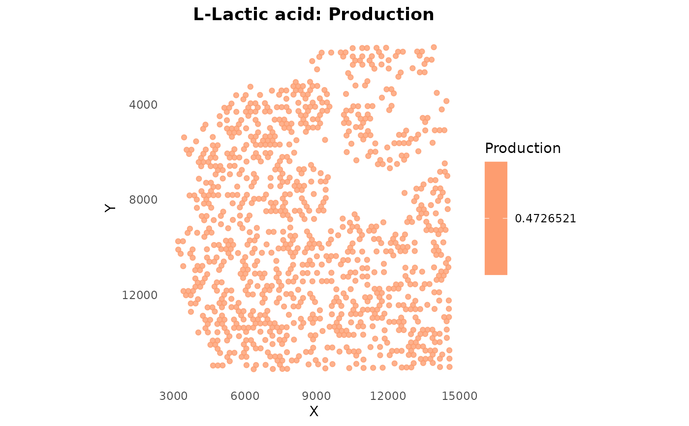

Visualize metabolite communication on spatial coordinates
Usage
plotSpatialFeature(
object,
metabolite,
type = "production",
cell_type = NULL,
point_size = 1.5,
alpha = 0.8,
low_color = "#FFFFCC",
high_color = "#E31A1C",
title = NULL
)Arguments
- object
A scMetaLink object with spatial information
- metabolite
Character. Metabolite ID or name to visualize
- type
Character. What to plot: "production", "sensing", or "communication"
- cell_type
Character. For communication, specify sender or receiver cell type
- point_size
Numeric. Size of spot points
- alpha
Numeric. Transparency (0-1)
- low_color
Character. Color for low values
- high_color
Character. Color for high values
- title
Character. Plot title (NULL for auto)
Examples
# \donttest{
data(st_expr)
data(st_meta)
data(st_scalefactors)
obj <- createScMetaLinkFromSpatial(st_expr, st_meta[,c("x","y")],
st_meta, "cell_type", st_scalefactors)
#> Created spatial scMetaLink object with 4284 genes, 1000 spots, 6 cell types
obj <- inferProduction(obj)
#> Inferring production potential for 6 cell types...
#> Calculating cell type expression profiles...
#> Building metabolite-gene mapping...
#> Found 15699 production enzyme-metabolite pairs
#> Computing production scores (matrix multiplication)...
#> Adjusting for degradation...
#> Applying secretion potential weights...
#> Normalizing scores...
#> Computed production scores for 796 metabolites
#> Done!
# Plot lactate production
plotSpatialFeature(obj, metabolite = "HMDB0000190", type = "production")

# }